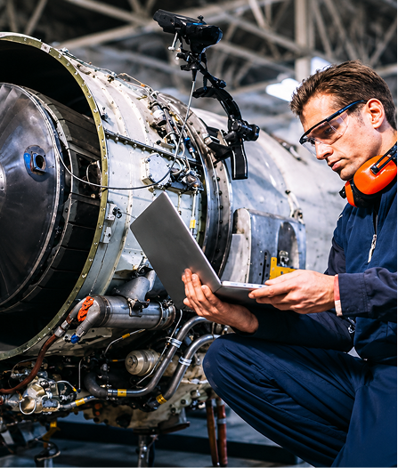

Ingegnere aereospaziale
Un ingegnere aerospaziale è un professionista che progetta, sviluppa e testa veicoli e sistemi per il volo e lo spazio, come aerei, satelliti, missili, droni e navicelle spaziali. Il suo lavoro richiede conoscenze approfondite di meccanica, elettronica, aerodinamica e materiali avanzati. Tra le sue principali attività c'e la progettazione e lo sviluppo di velivoli e veicoli spaziali, scegliendo materiali, forme e sistemi per garantire sicurezza.
L'ingegnere aerospaziale lavora sui sistemi di controllo e navigazione, assicurandosi che i veicoli rispondano correttamente ai comandi. Inoltre, svolge attività di test e collaudo, sperimentando prototipi in laboratorio o in volo per verificarne prestazioni, sicurezza e affidabilità. Infine, e impegnato nell'innovazione tecnologica, sviluppando nuovi materiali leggeri e soluzioni innovative per voli aerospaziali e spaziali più sicuri e sostenibili.